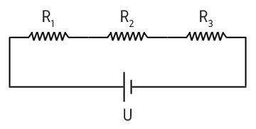

Resistores
Associação de Resistores em SÉRIE

Associação de Resistores é um circuito que apresenta dois ou mais resistores. Há três tipos de associação: em paralelo, em série e mista.
Ao analisar um circuito, podemos encontrar o valor do resistor equivalente, ou seja, o valor da resistência que sozinha poderia substituir todas as outras sem alterar os valores das demais grandezas associadas ao circuito.
Para calcular a tensão que os terminais de cada resistor está submetido aplicamos a Primeira Lei de Ohm:
U = R . i
U: diferença de potencial elétrico (ddp), medida em Volts (V)
R: resistência, medida em Ohm (Ω)
i: intensidade da corrente elétrica, medida em Ampére (A).
Na associação de resistores em série, os resistores são ligados em sequência. Isso faz com que a corrente elétrica seja mantida ao longo do circuito, enquanto a tensão elétrica varia.
Assim, a resistência equivalente (Req) de um circuito corresponde à soma das resistências de cada resistor presente no circuito
https://www.todamateria.com.br/associacao-de-resistores/